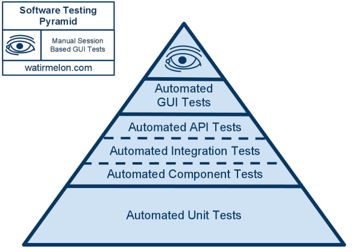
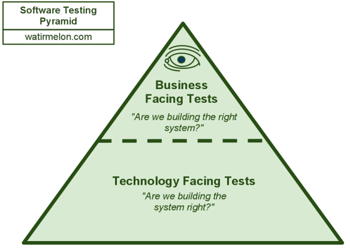

Using Protractor for AngularJS e2e testing
Based on the slides by @ramonvictor available here
Table of contents
Why is testing so important?
Testing is about gaining confidence that your code does what you think it should do
Whats the idea behind E2E testing?
- How would the users see my application?
- Does the frontend interacts the way I expect?
- Frequent regression testing.
- Rapid feedback is available.
- Can I release this code?
- It does NOT replace Unit Testing!
Protractor is built on top of WebDriverJS
Testing system (NodeJS program)
|
Webdriver (a.k.a. Selenium)
|
Your AngularJS App

Reference: Testing AngularJS apps with Protractor
Install
- Download Node.JS
npm install protractor -gwebdriver-manager update
Setup a conf.js file
exports.config = {
directConnect: true,
capabilities: {
'browserName': 'chrome'
},
specs: [
'e2e/specs/*.js'
],
baseUrl: 'http://localhost:9000/',
framework: 'jasmine2',
jasmineNodeOpts: {
defaultTimeoutInterval: 20000
}
};
The reference config file
Write your tests using Jasmine and WebdriverJS
We will use describe, it and expect syntax from the Jasmine framework.
And be using browser variable, which is a wrapper around an instance of WebDriver
Protractor global variables
browser:browser.get()browser.param..elementandby:element(by.model('yourName'))protractor:protractor.Key
Basic example
In the basic angular app
<div>
<label>Name:</label>
<input type="text" ng-model="yourName" placeholder="Enter a name here">
<h1>Hello {yourName}!</h1>
</div>
In the test
describe('by model', function() {
it('should find an element by text input model', function() {
browser.get('https://angularjs.org/');
var yourName = element(by.model('yourName'));
var greeting = element(by.binding('yourName'));
yourName.clear();
expect(greeting.getText()).toEqual('');
yourName.sendKeys('Jasmine');
expect(greeting.getText()).toEqual('Jasmine');
});
});Let's run it?
You can run Protractor on a terminal by typing:
protractor test/e2e/conf.js // this is the relative path to your config fileSearching for elements on the page
element() vs element.all()
Single element
element(by.binding('latest'));Collection of elements
// get elements count
element.all(by.repeater('result in memory')).count();by.binding
In your test
element( by.binding('myModel') );In your application
<span ng-bind="myModel"></span>
<!-- or -->
<span>{myModel}</span>
by.model
In your test
element( by.model('myModel') );In your application
<input ng-model="myModel" />by.repeater
In your test
element.all( by.repeater('user in users').column('user.name') );In your application
<ul>
<li ng-repeat="user in users">
<span>{user.name}</span>
</li>
</ul>by.css
In your test
element( by.css('[ng-click="sendMail()"]') );$('[ng-click="sendMail()"]');In your application
<button ng-click="sendMail()">Send mail!</button>Find out more in Protractor API
by.id()by.options()by.partialButtonText()element.all(locator).each(eachFunction)- Full list of available methods
Searching elements best practices
- Take advantage of AngularJS attributes using
by.model,by.binding,by.repeater, etc - Avoid using potential CSS attributes, mainly IDs and Classes.
Executing events
.click()
In your test
element( by.css('[ng-click="submit()"]') ).click();In your application
<button ng-click="submit()"><button>.sendKeys()
In your test
element( by.model('commentText') ).sendKeys("Hi!");In your application
<textarea ng-model="commentText"><textarea>Promises and the Control Flow
Promises based
All Protractor methods are asynchronous and return promises.
// Example of getText() promise
element( by.model('zipcode') ).getText()
.then(function(val) {
var num = val.substring(0, 4);
var isNum = !isNaN(num);
expect( isNum ).toBeTruthy();
});
Control Flow
WebDriverJS maintains a queue of pending promises, called the control flow, to keep execution organized.
it('should find an element by text input model', function() {
browser.get('#/home'); // (1) method browser.get
// (2) method by.binding
var login = element(by.binding('login'));
// (3) method getText
expect(login.getText()).toEqual('User');
});In the example above, the control flow would execute the queue following the sequence we see in the comments. Basically method by.binding would only run once browser.get promise is resolved, and so on.
So, you don't need to worry about calling runs() and waitsFor() blocks.
Debugging using elementexplorer
- Run:
protractor --elementExplorer
or./node_modules/protractor/bin/elementexplorer.js - This starts a selenium standalone server and puts the terminal into a read–eval–print loop (REPL).
- For interactive invoking of webdriver commands
- Press 'tab' for list of locator strategies.
- Find out more.
Maintanable Tests
Best practices to organize your tests
The big picture
- Page Objects - These are the js files following the Page Object pattern to represent the screens of your web app as a series of objects.
- Exports and Require - This is how you connect your Page Objects to your Test Specs.
- Test specs - These are the js files where you write your tests using jasmine syntax.
Why Page objects
- To see more Domain Specific Language (DSL) in the test specs.
- To avoid Code Duplication.
- To avoid High Coupling, and be flexible enough to be ready for change.
- And Easy Maintenance in long run.
Page Objects
//homepage.po.js
var AngularHomepage = function() {
};
AngularHomepage.prototype = Object.create({}, {
nameInput: { get: function() { return element(by.model('yourName')); }},
greeting: { get: function() { return element(by.binding('yourName')); }},
setName: { value: function(value) { return this.nameInput.sendKeys(name); }}
});
module.exports = AngularHomepage;
Node.JS exports and require
Your Page Object file
//homepage.po.js
var AngularHomepage = function() {
};
AngularHomepage.prototype = Object.create({}, {
nameInput: { get: function() { return element(by.model('yourName')); }},
//..
setName: { value: function(value) { return this.nameInput.sendKeys(value); }}
});
module.exports = AngularHomepage;
var AngularHomepage = require('./homepage.po.js');
describe('HomePage Tests', function() {
var angularHomepage = new AngularHomepage();
angularHomepage.setName('Julie');
//...
});
Tests directory structure
projectfolder/
|-- css/
|-- js/
|-- img/
|-- tests/
|-- unit/
|-- e2e/
| |-- authentication/
| | |-- *.spec.js
| |-- jobs/
| | |-- *.spec.js
| |-- pages/
| | |-- home.page.js
| | |-- login.page.js
| | |-- register.page.js
| | |-- jobs.list.apply.page.js
| | |-- *.page.js
| |-- protractor.conf.js
Go further!
Separate your tests in various test suites
exports.config = {
directConnect: true,
capabilities: { 'browserName': 'chrome' },
suites: {
homepage: 'tests/e2e/homepage/**/*Spec.js',
search: ['tests/e2e/contact_search/**/*Spec.js']
},
jasmineNodeOpts: { showColors: true }
};
protractor protractor.conf.js --suite homepage
Enable multiCapabilities
exports.config = {
directConnect: true,
multiCapabilities: [
{
'browserName' : 'chrome'
},
{
'browserName' : 'firefox'
}
],
specs: ['example-spec.js'],
jasmineNodeOpts: {
showColors: true
}
};Using onPrepare
Set window size before starting the tests
exports.config = {
directConnect: true,
capabilities: {
'browserName': 'chrome'
},
onPrepare: function() {
browser.manage().window().setPosition(0, 0);
browser.manage().window().setSize(1600, 800);
browser.manage().window().maximize();
},
jasmineNodeOpts: {
showColors: true
}
};Using onPrepare
Get HTML report and Capture a screenshot of failed specs of your Automated Suites.
First, install protractor-jasmine2-screenshot-reporter:
npm install protractor-jasmine2-screenshot-reporter --save-devUsing onPrepare
Get HTML report and Capture a screenshot of failed specs of your Automated Suites.
//protractor.conf.js
var HtmlScreenshotReporter = require('protractor-jasmine2-screenshot-reporter');
exports.config = {
// ...
onPrepare: function() {
jasmine.getEnv().addReporter(
new HtmlScreenshotReporter({
dest: 'test/report',
filename: 'test-report.html',
captureOnlyFailedSpecs: true,
reportOnlyFailedSpecs: false
})
);
}
};Using params
Your protractor.conf.js
exports.config = {
directConnect: true,
capabilities: { 'browserName': 'chrome' },
// This can be changed via the command line as:
// --params.login.user 'ngrocks'
params: {
login: {
user: 'protractor-br',
password: '#ng123#'
}
},
jasmineNodeOpts: { showColors: true }
};Using params
Your test
describe('login page', function() {
var params = browser.params;
it('should login successfully', function() {
element( by.model('username') ).sendKeys( params.login.user );
element( by.model('password') ).sendKeys( params.login.password );
element( by.css('[ng-click="login()"]') ).click();
expect( element(by.binding('username') ).getText() ).toEqual( params.login.user );
});
});Using jasmineNodeOpts
exports.config = {
directConnect: true,
capabilities: { 'browserName': 'chrome' },
jasmineNodeOpts: {
showColors: true,
defaultTimeoutInterval: 30000,
isVerbose: true,
includeStackTrace: true
}
};"But, I want to use Protractor in a non-AngularJS app"
Sorry, you can't! :(
Just kidding, of course
you can! :)
Protractor waits for Angular to finish its work
Though you can tell it not to be that smart about your non-Angular app:
beforeEach(function() {
browser.ignoreSynchronization = true;
});Let's make it more semantic?
In your config.js
onPrepare: function() {
global.isAngularSite = function(flag) {
browser.ignoreSynchronization = !flag;
};
}In your test
beforeEach(function() {
isAngularSite(false); // isAngularSite(true), if it's an Angular app!
});Reference: Protractor - Testing Angular and Non-Angular Sites
Demo time
Demo ngapp repo available on github.
Software testing pyramid
Reference: http://watirmelon.com/2011/06/10/yet-another-software-testing-pyramid/
Software testing pyramid
Reference: http://watirmelon.com/2011/06/10/yet-another-software-testing-pyramid/
Final thoughts
- E2E testing is a complement to Unit testing
- Avoid using CSS attributes for searching elements
- Write your tests with scalability in mind
- More over test features, not data!
Learning Resources
Thank you
Thanks to WHG team
for the opportunity!